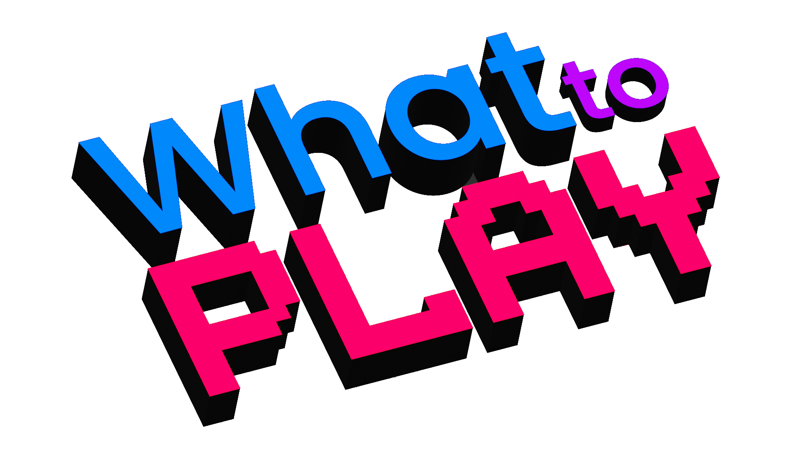

Descubra qual vai ser seu próximo jogo!
WhatToPlay é o seu Netflix personalizado para jogos, fornecendo recomendações especializadas de acordo com suas preferências. Descubra uma vasta coleção de jogos de diferentes gêneros, plataformas e estilos, todos cuidadosamente selecionados para combinar com seu gosto de jogar. Seja fã de ação, aventura, estratégia ou jogos independentes, o WhattoPlay tem tudo o que você precisa. Diga adeus à fadiga de decisão e deixe o WhatToPlay te guiar para sua próxima aventura nos jogos.